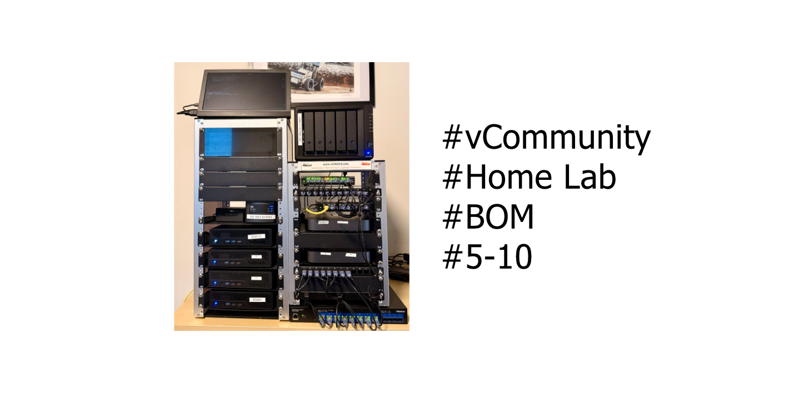
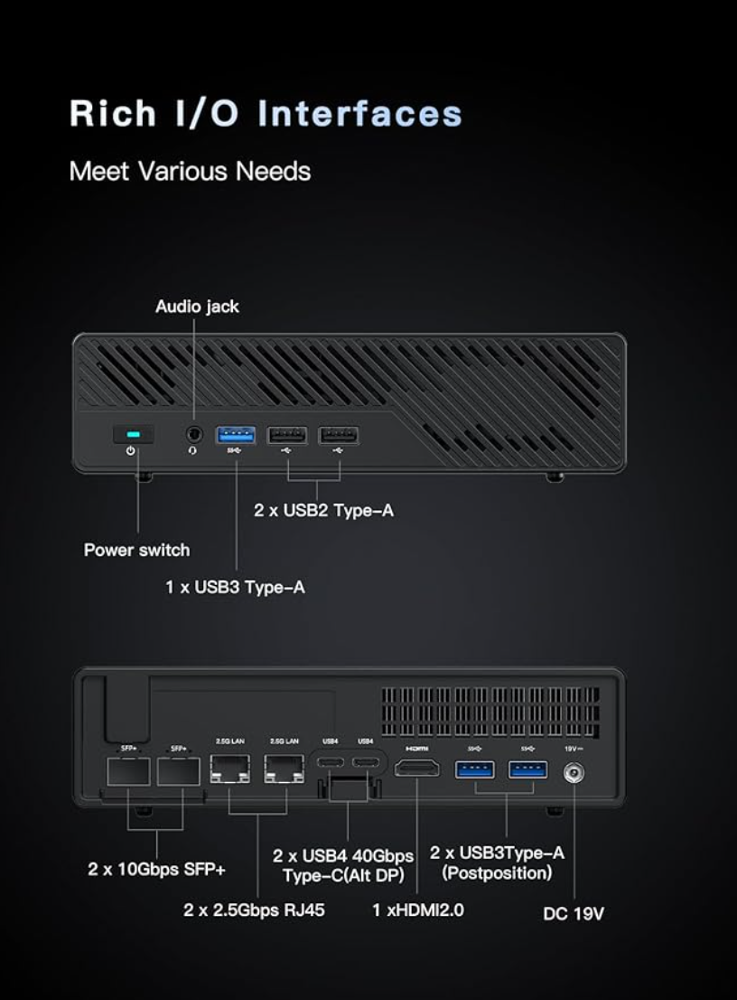
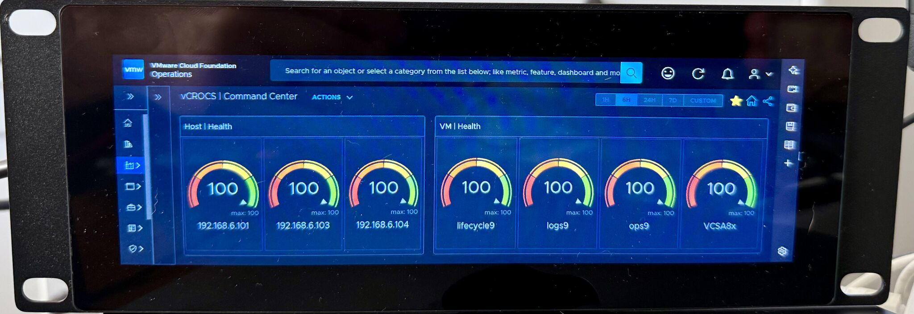
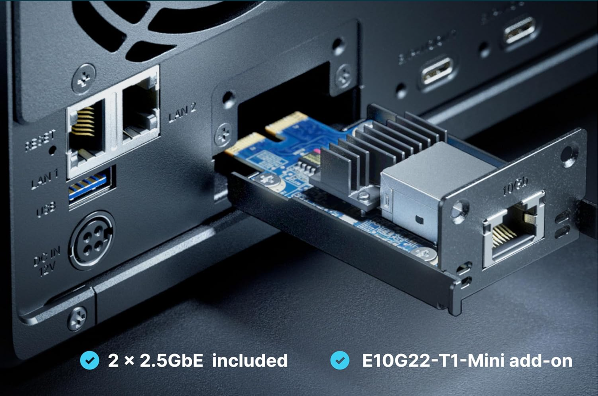
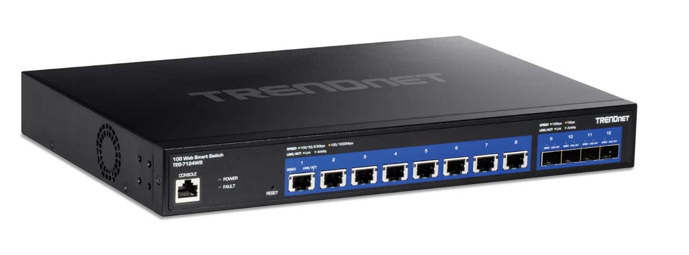
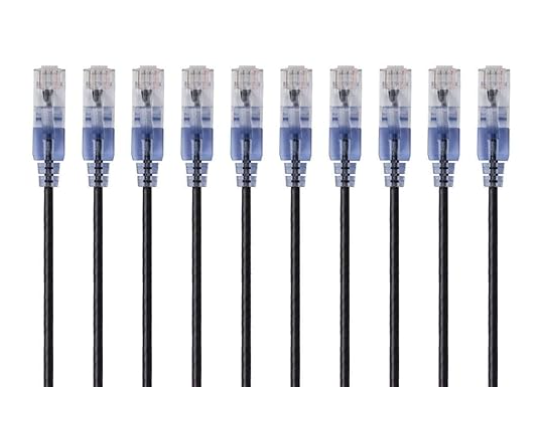
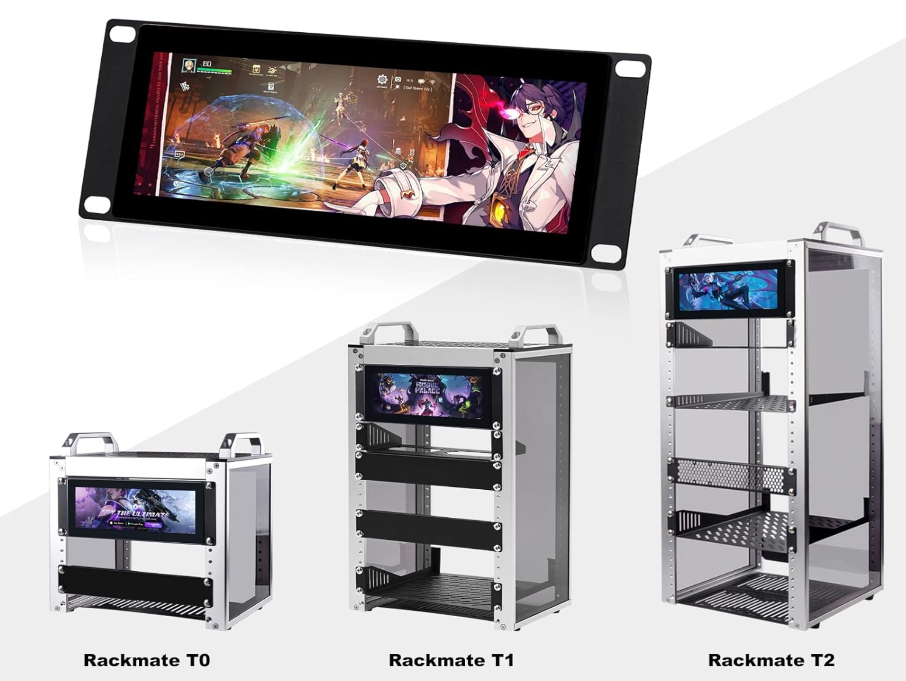
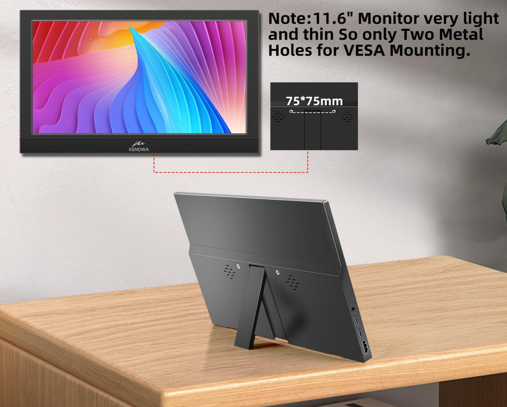
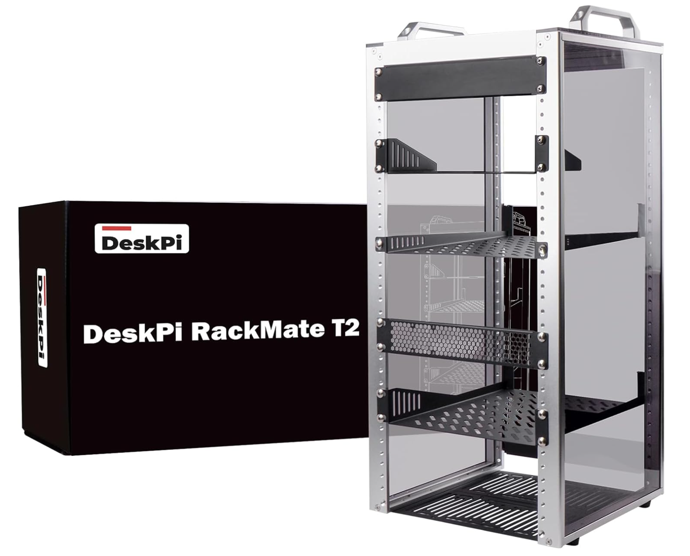
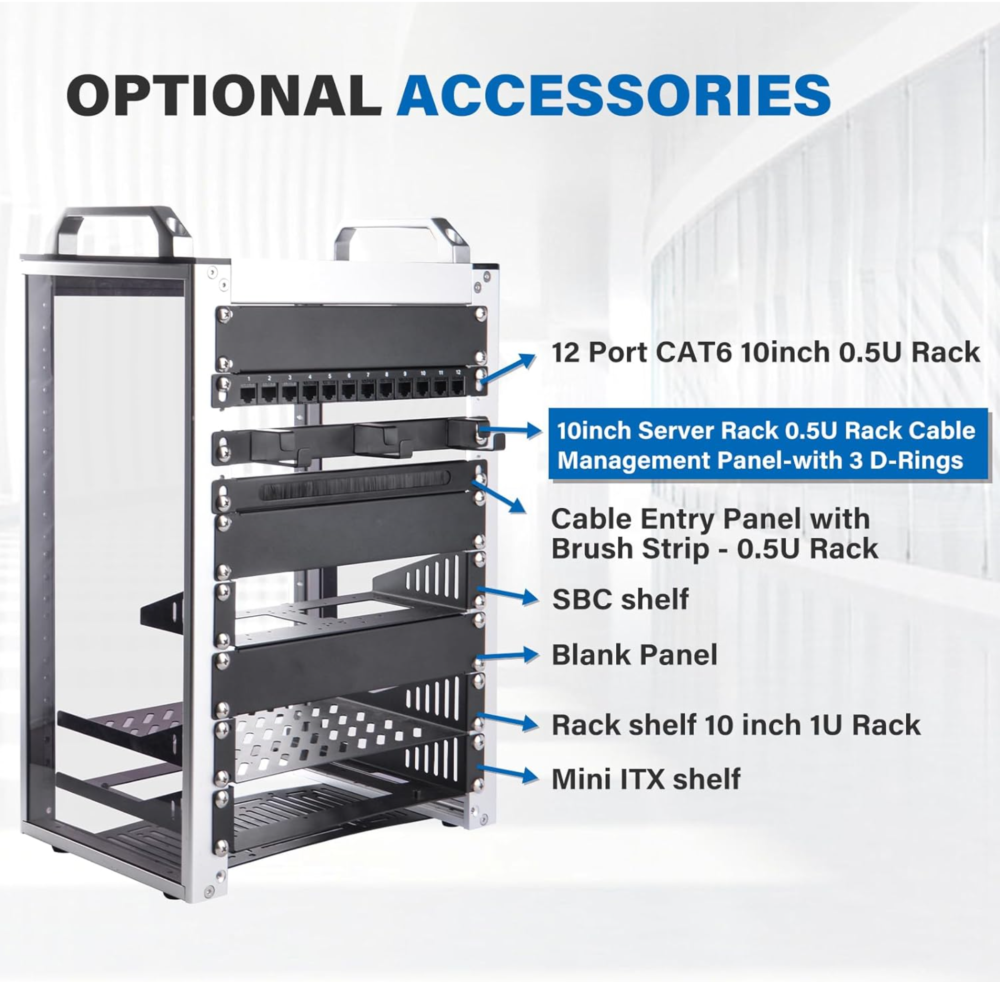

Home Lab | Current BOM

Future-Proof Your Skills: The Strategic Value of a Personal Lab Environment.
"Level up your career by leveling up your home lab. #HomeLab #Technology #Career"
Details of my Home Lab:
For as long as I can remember, my home lab has been the area where I could learn and experiment with emerging technologies. Early in my career, I was fortunate to have some employers who allowed us to take home decommissioned servers for learning purposes.
There is a lesson here for leadership: Invest in your team, not e-waste. If you manage technical staff, give them the option to take retired servers home. It transforms depreciated assets into a powerful training ground for your workforce.
If you are just starting out, don't feel pressured to buy a full rack of gear; remember that complexity isn't a requirement. Start small. You don't need a massive budget to begin; let your lab evolve naturally alongside your skills and career.
Recently, I shared a photo of my current setup on social media, and it became one of my most active posts to date. Since so many of you asked for the specifics, I decided to write this post to share the detailed Bill of Materials (BOM) for my home lab.

Current BOM:
- (3) Minisforum MS-01 (Intel Based)
- NVMe for Tiered Memory:
- Kingston Fury Renegade 500GB PCIe Gen 4.0 NVMe M.2 Internal Gaming SSD with Heat Sink | Up to 7300MB/s | SFYRSK/500G
- NVMe for Storage:
- Samsung 990 PRO SSD 4TB PCIe 4.0 M.2 2280 Internal Solid State Hard Drive, Seq. Read Speeds Up to 7,450 MB/s for High End Computing, Gaming, and Heavy Duty Workstations, MZ-V9P4T0B/AM
- If you are installing VMware ESXi, you NEED to do tiered memory. Tiered Memory is a game changer for Home Labs.
- You have plenty of options for NVMe storage, but keep an eye on the price tags; they vary wildly.
- I recommend shopping around for DDR5. The specific kit I used is listed, but note that it has become much more expensive recently.
- Crucial 128GB Kit (2X64GB) DDR5 RAM 5600MHz (or 5200MHz or 4800MHz) Laptop Memory Kit, SODIMM 262-Pin, Compatible with Latest Intel Core Ultra and AMD Ryzen 8000 & Above – CT2K64G56C46S5
- This is the #1 reason I went with the Minisforum MS-01 and MS-A2 hardware. I like all the port options.
- (1) Minisforum MS-A2 (AMD Based)

- (2) Apple Mac Mini (Intel) 🍎
- The Mac Minis were my daily drivers at one point in time.
- I added VMware Fusion and now I use them for some of my testing to run VMs.
- Evolving my lab over time.
- (1) Raspberry Pi 5
- I have a Raspberry Pi 5 that I am going to connect to the Rack Monitor to display Dashboards from VCF Operations. 📊
- This will drive my NOC, rotating several Dashboards from VCF Operations.
- I won this Raspberry Pi 5 at the 2025 VMware Explore Hackathon. 🥇
- I also have a Raspberry Pi 4 running ESXi that is not currently in my lab mini Rack.

- Synology 5-Bay DiskStation DS1525+ NAS 💾
- I have a combination of HDDs for capacity and SSDs for speed.
- Added the Synology Network Upgrade Module to add 1x 10GbE RJ-45 port


- TRENDnet 12-Port 10G Web Smart Switch, TEG-7124WS, 8 x 10G RJ-45 Ports, 4 x SFP+ Slots
- I wanted a network switch that supported 10G ports and a switch that I could manage from a web interface. I have an MCP server that I can prompt against this switch to monitor the ports.
- I am able to SSH into the switch and run commands to monitor the ports.
- I can also use the web interface to manage the switch.

- TP-Link TL-SG108S-M2 | 8-Port Multi-Gigabit 2.5G Ethernet Switch | Unmanaged Network Switch
- I wanted a simple network switch that supported 2.5G ports. I used this before I added hardware that supported 10G ports. This is an example of how a home lab will evolve over time.
- Monoprice Cat6A Ethernet Patch Cable - Snagless RJ45, 550Mhz, 10G, UTP, Pure Bare Copper Wire, 30AWG, 10-Pack, 1 Foot, Black - SlimRun Series
- I like the SlimRun Series patch cable a lot. I order the lengths I need and they help keep the setup clean looking.

- GeeekPi 7.84 inch 1280x400 LCD Touch Screen 2U Rack Mount Monitor for DeskPi RackMate T0/T1/T2/T0 Plus/T1 Plus Server Cabinet 📺
- I like how this is built-in to the rack mount cabinet.

- Kenowa Portable Monitor 11.6 Inch, FHD 1080P LED Screen Small HDMI Monitor with Dual USB C HDMI, External Display for Laptop Mac Phone PC PS4/5 Xbox, Built-in Speakers 🖥️
- This is a portable monitor that I have on top of the rack or I can move anywhere I need a small monitor.

- GeeekPi 12U Server Cabinet, 10 inch Server Rack for Network, Servers, Audio, and Video Equipment, DeskPi RackMate T2 Rackmount, 10.23 inch Depth
- Also a GeeekPi 8U Server Cabinet, 10 inch Server Rack for Network, Servers, Audio, and Video Equipment, DeskPi RackMate T1 Rackmount, 7.87 inch Depth
- I LOVE ❤️ these Racks to keep everything organized!

Two Rack Cable Organizers I use:
- GeeekPi 12 Port Patch Panel, 10inch 0.5U CAT6 Network Patch Panel for DeskPi RackMate T1/T0/T2/T1 Plus/T0 Plus and 10 Inch Server Rack/Network Cabinet
- GeeekPi 10inch 0.5U Metal Horizontal Rackmount Cable Manager with 3 D-Ring Hooks – 10 Inch Server Rack Cable Management Panel for DeskPi Rackmate T1/T0/T2/T0 Plus/T1 Plus

Thoughts on Hardware
- Practicality over Speed: Since this is a Home Lab, I don’t need the absolute latest bleeding-edge hardware. My priority is reliability and longevity—gear that works consistently over the long haul.
- A Long-Term Evolution: This environment didn't happen overnight. It is a work in progress that has been evolving for over 30 years, ever since I started my career in technology.
- The Power of Virtualization: I value the ability to run multiple operating systems on a single piece of hardware. The efficiency of virtualization is still amazing to me.
- Maximizing Resources: I am a big fan of Tiered Memory. It allows me to get significantly more capacity and utility out of my existing lab hardware.
- Future-Proofing: I appreciate that we can now virtualize GPUs just like CPUs. Implementing vGPU technology is definitely on the roadmap for a future lab upgrade.
Wish List:
- UniFi Pro XG 8 PoE Switch
- I want to learn more about the UniFi Products.
- I am planning to add GPUs to my Home Lab.
- My goal is to dive deeper into K8s, which really highlights the value of a Home Lab for professional growth.
"9 - 5 pays the bills, 5 - 10 advances your career"
Lessons Learned:
- Too many to list. My Home Lab is priceless. The hands-on experience I gain here translates directly into value for the customers I work with. It is also the foundation of my writing—almost every blog post originates from work done in this environment.
- When building a Home Lab, you have countless choices. I tend to stick with reliable gear that has solid community feedback, but every lab is different—use what makes the most sense for you.
In my blogs, I often emphasize that there are multiple methods to achieve the same objective. This article presents just one of the many ways you can tackle this task. I've shared what I believe to be an effective approach for this particular use case, but keep in mind that every organization and environment varies. There's no definitive right or wrong way to accomplish the tasks discussed in this article.
If you found this blog helpful, consider buying me a coffee to kickstart my day.